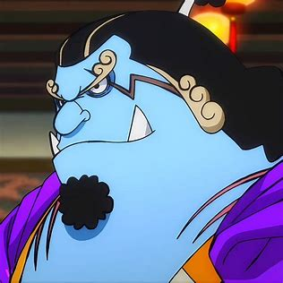

Alias: ksatria lautan. Jabatan: supir/pengemudi kapal. Tebusan/Bounty: ฿1,100,000,000
Jinbe ( ジンベエ Jinbē? ) adalah seorang mermen spesies hiu paus, mantan Shichibukai dan kapten kedua kelompok Bajak Laut Matahari setelah Fisher Tiger. Gelar Shichibukainya dicabut karena menolak ikut serta dalam perang melawan Shirohige, serta secara terang-terangan membantu Monkey D. Luffy dan Bajak Laut Whitebeard. Namanya disebutkan pertama kali oleh Yosaku setelah Cerita Baratie Chapter 69 sebagai seorang Shichibukai, namun penampakannya baru muncul dalam Cerita Impel Down Chapter 528 sebagai Shichibukai terakhir yang diperkenalkan.
Ia kemudian bersekutu dengan Luffy dan kru topi jerami melawan pemberontakan Bajak Laut Manusia Ikan Baru dan Vander Decken IX terhadap Kerajaan Ryugu. Jinbe bahkan ditawari bergabung dengan kru topi jerami, namun menolak karena masih memiliki urusan yang belum selesai dengan Yonko Big Mam. Menurut anggota kru Bajak Laut Manusia Ikan Baru, ia memiliki nilai bounty lebih dari 400.000.000.
Jinbe merupakan seorang bajak laut yang membenci bajak laut. Sikap ini tak lepas dari maraknya kejahatan bajak laut yang sering terjadi di pulau Manusia Ikan. Meski demikian ia bersedia berteman dengan beberapa bajak laut. Jinbe menyatakan bahwa ia bersedia membela orang-orang yang mendapat hormat darinya, seperti Shirohige, Portgas D. Ace dan Monkey D. Luffy.
Ia memiliki sikap melindungi terutama bagi pulau Gyojin dan penduduknya. Ia rela melakukan apa saja demi melindungi mereka. Bahkan jika harus kehilangan gelar Shichibukainya dan dipenjara di Impel Down. Selain itu, ia seorang yang setia kawan, selalu berusaha membantu mereka jika diperlukan.
Jinbe adalah seorang mermen spesies hiu paus yang bertubuh besar dan gemuk, mirip dengan penampilan pegulat sumo. Karakter wajahnya dibuat mirip mitologi setan bangsa jepang seperti "oni"; seperti alis kuning dan bentuk cambang, serta hidung besar dan sudut bibir bawah mengarah ke atas. Ia juga memiliki sepasang taring besar yang memanjang ke atas hingga keluar mulut dari gigi bagian bawah dan bentuk telinganya lancip pada bagian atas. Selain itu, rambutnya berwarna hitam keriting panjang hingga ke punggung, yang memiliki dua garis berwarna emas (berwarna putih di anime) dan di kuncir bagian atasnya, serta memiliki janggut hitam lebat di dagu. Pada awalnya, dua garis di rambut Jinbe belum ada, termasuk janggut yang kemudian tumbuh secara bertahap dari waktu ke waktu. Permukaan kulitnya berwarna biru muda dan di kedua tangan dan kaki, masing-masing memiliki selaput, ciri khas ras mermen, serta sepasang insang merah kepucatan di kedua bahu. Ia juga memiliki semacam bekas luka berbentuk kilat di kepala yang memanjang dari samping hingga melewati mata sebelah kiri dan tato besar lambang Bajak Laut Matahari di depan dada.
Jinbe sering terlihat mengenakan pakaian tradisional ala jepang, dengan kimono berbagai pola dilengkapi sepasang sandal bakiak. Pada awal kemunculannya saat dipenjara di Impel Down, ia mengenakan kimono merah pucat berdesain kotak dengan tepi warna hitam, menutupi pakaian tradisional berwarna hitam polos bertepi warna putih. Saat masih menjadi pengawal kerajaan, ia memakai seragam khas kerajaan dan terlihat merokok pipa. Selama pemakaman Otohime, Jinbe mengenakan jas hitam. Ia memakai karakusa dan menggantinya dengan kimono desain bunga saat menjadi anggota Bajak Laut Matahari. Saat bertarung dengan Ace, ia mengenakan gi hitam dengan desain ikan pada kedua sisi dada, dan selempang merah dengan tanto yang terikat di sana. Dua tahun setelah perang saat menunggu Luffy di hutan laut, ia memakai kimono berpola daun-daun.
Jinbe sering terlihat mengenakan pakaian tradisional ala jepang, dengan kimono berbagai pola dilengkapi sepasang sandal bakiak. Pada awal kemunculannya saat dipenjara di Impel Down, ia mengenakan kimono merah pucat berdesain kotak dengan tepi warna hitam, menutupi pakaian tradisional berwarna hitam polos bertepi warna putih. Saat masih menjadi pengawal kerajaan, ia memakai seragam khas kerajaan dan terlihat merokok pipa. Selama pemakaman Otohime, Jinbe mengenakan jas hitam. Ia memakai karakusa dan menggantinya dengan kimono desain bunga saat menjadi anggota Bajak Laut Matahari. Saat bertarung dengan Ace, ia mengenakan gi hitam dengan desain ikan pada kedua sisi dada, dan selempang merah dengan tanto yang terikat di sana. Dua tahun setelah perang saat menunggu Luffy di hutan laut, ia memakai kimono berpola daun-daun.
Dalam SBS Volume 63 saat Oda menggambar Shichibukai sebagai anak-anak, Jinbe terlihat sebagai anak kecil dengan rambut terang mengenakan gi compang-camping sedang berlatih Karate Gyojin. Ia sudah memiliki sabuk hitam pada usia tersebut.
Sebagai seorang Shichibukai, Jinbe termasuk salah satu karakter terkuat dalam cerita. Ia pernah bertarung dengan Portgas D. Ace yang memiliki kekuatan Buah Iblis tipe Logia selama lima hari terus menerus. Ia mampu mengalahkan Shichibukai lainnya Gekko Moria hanya dengan satu pukulan, dibandingkan dengan Luffy dan kru yang harus bersusah payah saat bertarung dengannya. Saat di penjara di Impel Down, ia ditempatkan di Level 6, sebuah level tempat kriminal paling barbahaya di dunia di tahan.
Jinbe juga memiliki kemampuan menganalisa yang cerdas. Ia mampu memperkirakan langkah Magellan dengan menduga ia akan memerintahkan semua kapal perang agar menjauh dari Impel Down. Saat pertempuran di Marineford, ia bisa memperkirakan bahwa para marinir merencanakan sesuatu saat Ivankov memberitahunya bahwa musuh mundur lebih jauh ke belakang. Ia juga bisa merancang strategi saat mengusulkan cara untuk menyelundupkan Luffy dan krunya ke Gyoncorde Plaza dengan cara menipu Hody Jones. Ia juga memiliki kecerdasan menavigasi kapal seperti saat kepergian mereka dari Impel Down. Sejauh ini, Jinbe terlihat sebagai ras mermen yang paling kuat. Ia mampu mengirim terbang mermen raksasa Wadatsumi hanya dengan satu tendangan. Akan tetapi, Jinbe mengaku bahwa dia tidak cukup kuat jika berada di darat. Meski begitu, ia bisa menjadi cepat saat mencegat "Gear Second" Luffy mencegahnya menyerang Blackbeard. Ia juga dengan mudah merobohkan daun pintu yang cukup besar yang digunakan sebagai rakit bagi Crocodile, Daz Bones dan Buggy. Namun jika sudah berada di dalam air, Jinbe sangat mendominasi. Ia dapat mengejar kapal perang saat membawa Crocodile, Daz Bones dan Buggy di atas rakit, bahkan dapat menghindari serentetan tembakan meriam dengan relatif mudah. Sebagai mermen yang hanya mengandalkan skill semata, Jinbe betul-betul seorang petarung yang ahli, dibandingkan pengguna kekuatan Buah Iblis lainnya. Ia juga memiliki kemampuan unik seperti kebanyakan ras mermen lainnya, dapat berkomunikasi dengan ikan sekaligus dapat menyuruh mereka melakukan sesuatu.
Jinbe adalah master Karate gyojin, yang telah memegang sabuk hitam sejak masih kanak-kanak. Keterampilannya sedemikian rupa sehingga ia bahkan tidak perlu berkontak fisik langsung dengan musuhnya dan dapat membuat serangan jarak jauh yang sangat merusak, seperti memukul orang atau saat merusak kapal. Kepada kru topi jerami, Jinbe mengungkapkan bahwa teknik gyojin Karate memungkinkan ia untuk mengontrol semua air di sekitarnya, termasuk air dalam tubuh seseorang. Dengan kemampuannya, ia bahkan dapat memukul Luffy yang bertubuh karet, juga Caribou yang merupakan pengguna Buah Iblis Logia.
Tidak diketahui pasti apakah Jinbe memiliki salah satu kemampuan Haki, namun seperti kebanyakan karakter yang malang melintang di Dunia Baru, ia juga cukup familiar dengan Haki. Ia ikut berkomentar saat melihat Luffy melepas Haoshoku Haki kepada sebagian kru Bajak Laut Manusia Ikan Baru. Ia juga mampu mengimbangi pertarungan dengan Ace yang seorang pengguna Buah Iblis tipe Logia. Saat dipukul Akainu pertama kali, ia mampu menahannya dengan tangan meski kemudian merasa kesakitan karena panasnya.
Saat masih menjadi tentara kerajaan Ryugu, Jinbe terlihat membawa sebuah tombak trisula meski belum pernah terlihat menggunakannya. Selain itu, ia juga terlihat memiliki tanto saat bertarung melawan Ace, dan tidak terlihat menggunakannya.